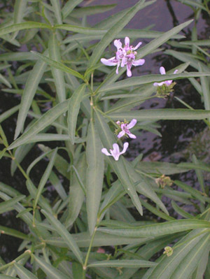

Previous || Next || Return to Mystery Plants || USC Herbarium
This Week's Mystery Plant | Dr. John B. Nelson Curator, USC Herbarium |
|
A swim in a nice cold river (or maybe "an ice cold river"?) here in the central midlands is always a good idea, now that it's hot. Or, you might be on one of our beautiful creeks or rivers in a canoe or kayak, which is a wonderful way to see plants and critters. This week's mystery plant is a native resident and is easy to spot now. The stems are angled, smooth, and tough. The narrow leaves, which resemble those of a willow tree, are bright green, and the central, pale midvein extends from the base of the leaf blade nearly to the tip. The flowers are held in compact spikes on the upper parts of the stem, which gets to be about 2 feet tall. The flowers exhibit a beautiful white (or pink) corolla with an upper and lower lip. The lower lip is spotted with purple. This species grows widely from Texas to New England, and then into Canada, always found near water. In the Southeast, it is most likely seen in the Piedmont and Mountains. The plants are able to form colonies along riverbanks, often forming very tightly rooted stands between rocks and boulders. This is important, as flooding events along rivers will dislodge plants without a solid footing. As well, this species is often seen as a resident of quiet lake shores, especially those lakes that represent impounded streams (such as Lake Murray and Lake Wateree). In large enough colonies, the plants are sometimes a nuisance to boating and recreation; on the other hand, this species is highly useful in erosion control in many wetland situations, and is sometimes planted for this purpose. You might look for it, in the Columbia area, within the shoals of the Broad River on the north side of town. (You can actually see clumps of it amongst the rocks as you drive over I-126.) |
 Photo by Linda Lee |